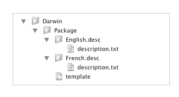

When you create a new project, Iceberg lets you choose a template amongst a list of predefined project templates.
This document shows you how to create and add your own project templates.
Project templates locationProject templates shall be put in the folder:
|
By default, Iceberg proposes the following templates:
/Library/PreferencePanes/ folder./Library/Application Support/Backup/QuickPicks/ folder./Library/Screen Savers/ folder./Library/Spotlight/ folder.
Project templates are mainly Property List files describing the default settings of a project when you create a new one.
| 1 | Open a new Finder window. | ||
| 2 | Choose Go > Go to Folder… . | ||
| 3 | Type /Library/Application Support/Iceberg/Projects Templates
in the Go to the folder text field and click Go. | ||
| 4 | Choose File > New Folder and set the name of the new folder to MyTemplates
to create a new category of templates.
| ||
| 5 | Within this folder, create a new folder and named it with the name that shall appear in the list of templates in Iceberg. | ||
| 6 | Using a text editor or Property List Editor, create a file named template.packproj.
| ||
| 7 | Complete this file according to the Iceberg project format described in the
Document format document.
| ||
| 8 | Within the project template folder, create a folder for every localization you will
provide for the project description. The project description is displayed in the Project creation assistant window.
| ||
| 9 | Create a text file named description.txt with the localized project template description inside every .desc folder. |
The final files hierarchy should look like this:

| ||||||||||||||||||||||||||||||||||||||||